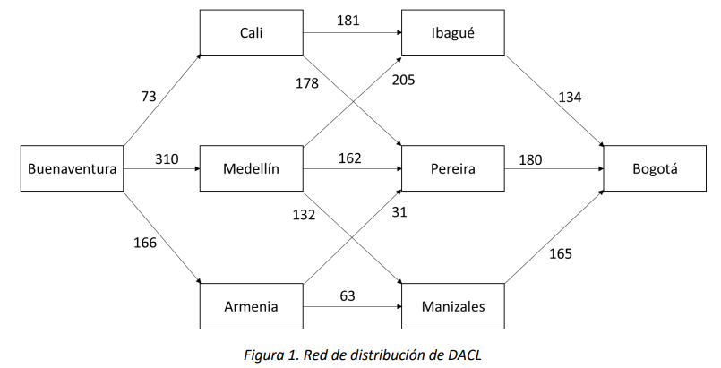
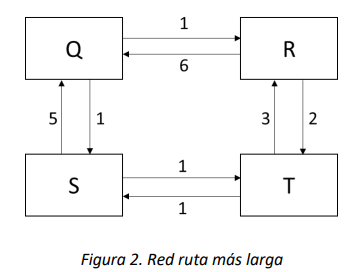

17. Principio de Optimalidad y Ecuaciones de Bellman#
En este capítulo se presenta la definición del principio de optimalidad, condición necesaria para resolver un problema de decisión en el tiempo usando programación dinámica. Se muestra un ejemplo de un problema que no cumple con el principio de optimalidad y, finalmente, se muestra la construcción de las ecuaciones recursivas que permiten construir la política óptima para un problema de decisión en el tiempo.
17.1. Principio de optimalidad - Definición#
Solucionar un problema de decisión en el tiempo consiste en encontrar una política óptima. Esto es, encontrar una decisión para cada estado y cada época tal que se minimice (o se maximice) una función objetivo. Como se vio en el capítulo anterior, una de las formas de encontrar la política óptima \(\pi^{*}\) es usando inducción hacía atrás. Fundamentalmente, realizar inducción hacía atrás consiste en escribir la solución al problema en la etapa \(t \in E\) en términos de la solución del mismo problema para algún estado de la etapa \(t + 1\). Esto es posible siempre y cuando el problema que se quiera resolver cumpla con el principio de optimalidad, que se define a continuación:
17.1.1. Definición 16.1.1:#
En la política óptima de un problema, independientemente de los estados y de las decisiones sobre una época inicial, los estados y las decisiones de las épocas restantes deben ser óptimas con respecto al subproblema resultante al remover la época inicial.
Ejemplo 1
DACL es una empresa de paquetería que cuenta con 36 centros de distribución en Colombia. Un paquete que llega al puerto de Buenaventura y tiene destino final en Bogotá se puede mover por la red de distribución de DACL como se muestra en la Figura 1, donde el peso de cada arco es el costo de enviar un paquete de una ciudad a otra:

En este caso el problema que se quiere solucionar es encontrar la ruta más económica para enviar un paquete de Buenaventura a Bogotá, y para encontrarla es necesario resolver subproblemas que consisten en encontrar la ruta más económica entre ciudades intermedias y Bogotá. Así, DACL sabe que la ruta más corta entre Buenaventura y Bogotá es la ruta Buenaventura-Armenia-Pereira-Bogotá con un costo de $377. Si este problema cumple con el principio de optimalidad, entonces DACL también podría decir que la ruta más corta entre Armenia y Bogotá es Armenia-Pereira-Bogotá.
Suponga que esto no es cierto, es decir, la ruta más corta de Armenia a Bogotá es por ejemplo Armenia-Manizales-Bogotá. Esto implicaría que la ruta Buenaventura-Armenia-Manizales-Bogotá es más corta que Buenaventura-Armenia-Pereira-Bogotá, lo que contradice el hecho que la ruta más corta entre Buenaventura y Bogotá es Buenaventura-Armenia-Pereira-Bogotá.
Ahora, el principio de optimalidad no se cumple para todos los problemas. Cuando un problema de decisión en el tiempo no cumple con el principio de optimalidad, se debe solucionar con técnicas diferentes a inducción hacía atrás o programación dinámica. A continuación, se muestra un ejemplo de un proceso de decisión que no cumple con el principio de optimalidad.
Ejemplo 2
Considere la red de la Figura 2, donde se quiere hallar la ruta más larga sin ciclos del nodo Q al nodo T. Note que es de interés hallar rutas sin ciclos pues cuando se permiten ciclos la solución se vuelve trivial y vale \(\infty\):

En este caso, el problema es encontrar la ruta más larga de Q a T y los subproblemas son encontrar la ruta más larga entre los nodos intermedios y T. No es difícil ver que la ruta más larga entre Q y T es Q-R-T con una distancia de 3. Si este problema cumpliera con el principio de optimalidad, entonces R-T sería la ruta más larga entre R y T; sin embargo, la ruta más larga en este caso es R-Q-S-T.
17.2. Ecuaciones de Bellman – caso determinístico#
Recordemos el ejemplo 1. Definimos:
Entonces el problema se reduce a encontrar \(f_{1}(\text{Buenaventura})\) y la política \(\pi^{*}\) que le permite a DACL alcanzar ese valor. Así, en general se puede definir \(f_{t}(i)\) para cualquier estado y cualquier etapa así:
Si además se sabe que el problema cumple con el principio de optimalidad, es posible construir la solución óptima a partir de soluciones óptimas a problemas más pequeños. Sabemos que para el estado \(i \in S_{t}\) de la etapa \(t \in T\) encontrar la solución es escoger algún \(a \in A_{t}(i)\) que minimice (o maximice) \(f_{t}(i)\). Entonces, es posible escribir una relación recursiva de la forma:
Donde \(s_{t + 1}(i,a)\) es el estado al que se llega en la época \(t + 1\) cuando en la época \(t \in E\) y el estado \(i \in S_{t}\) se toma la decisión \(a \in A_{t}(i)\). Note que para conocer \(f_{t}(i)\) es necesario conocer \(f_{t + 1}(j)\) para cada estado \(j\) al que se puede ir al tomar la decisión \(a \in A_{t}(i)\). Si escribimos la misma ecuación para \(f_{t + 1}(j)\) obtenemos:
Y nuevamente, para conocer \(f_{t + 1}(j)\) es necesario conocer \(f_{t + 2}(i)\) para algún estado \(i \in S_{t + 2}\). Es necesario entonces formular esta misma ecuación recursiva hasta la última etapa del proceso de decisión, donde se obtiene:
Note que esta última ecuación es la solución al subproblema más pequeño, y a partir de esta se pueden solucionar los subproblemas moviéndose de la última hasta la primera etapa de decisión hasta encontrar la solución al problema original.